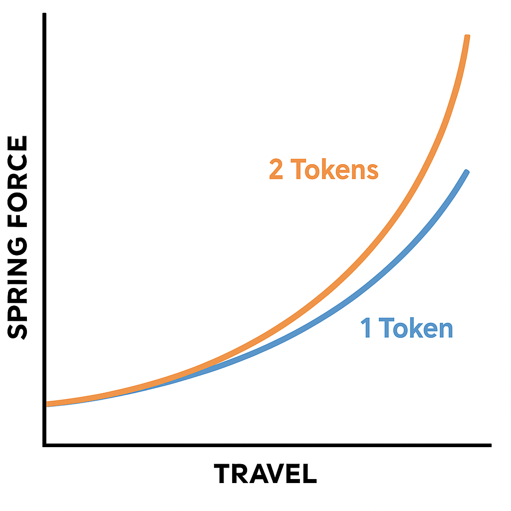

Un ammortizzatore posteriore ben regolato migliora la trazione, il comfort e l’efficienza della tua mountain bike. In questa guida vediamo come settarlo in modo corretto, passo dopo passo.
Il SAG rappresenta quanto l’ammortizzatore affonda sotto il tuo peso, a bici ferma. Per misurarlo:
I valori raccomandati sono:
La pressione va regolata con una pompa da sospensioni. In genere si parte con una pressione pari al peso del rider in kg (es. 70 kg → 170 psi) e si regola fino a ottenere il SAG desiderato. Attenzione: la cinematica della bici può influenzare questa proporzione.
Il rebound determina la velocità con cui l’ammortizzatore ritorna in estensione dopo una compressione. Troppo veloce = rimbalzo, troppo lento = bici che si "impacca". Regola la manopola rossa in base alle sensazioni:
Controlla quanto è duro o morbido l’affondamento dell’ammortizzatore. Spesso è divisa in:
Inizia con valori intermedi e regola in base al tuo stile di guida e terreno.
Proprio come nelle forcelle, anche negli ammortizzatori ad aria puoi aggiungere volume spacers per rendere la sospensione più progressiva:
I token riducono il volume d’aria nella camera positiva, aumentando la resistenza nel finale corsa. Ricorda che non influenzano il SAG.
| Parametro | Funzione | Come regolarlo |
|---|---|---|
| SAG | Affondamento iniziale | Pompa + calcolo % |
| Pressione | Sostegno | In base al peso e SAG |
| Rebound | Velocità di ritorno | Manopola rossa |
| Compressione | Resistenza affondo | Manopola blu (LSC/HSC) |
| Token | Progressività | Inserisci o rimuovi volume spacers |